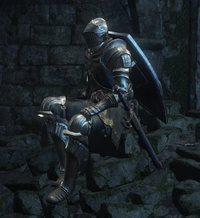

|  |
Anri Of Astora"Ahh, you are brave indeed. To face your duty alone. Anri is one of the two children that managed to escape from Aldrich long ago. Like the Ashen One, Anri is an Unkindled in search of the Lords of Cinder, seeking to slay Aldrich. Anri travels with Horace the Hushed as part of this quest. |